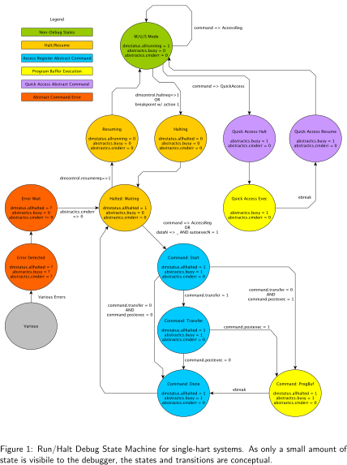

| Metadata Table | |
|---|---|
| Manual Type | debug |
| Spec Revision | 0.13.2 |
| Spec Release Date | 2019-03-25 |
| Git Revision | task_group_vote-4-g4e0bb0f |
| Git URL | https://github.com/riscv/riscv-debug-spec.git |
| Source | debug_module.tex |
| Conversion Date | 2023/11/12 |
| License | CC-by-4.0 |
The Debug Module implements a translation interface between abstract debug operations and their specific implementation. It might support the following operations:
Give the debugger necessary information about the implementation. (Required)
Allow any individual hart to be halted and resumed. (Required)
Provide status on which harts are halted. (Required)
Provide abstract read and write access to a halted hart’s GPRs. (Required)
Provide access to a reset signal that allows debugging from the very first instruction after reset. (Required)
Provide a mechanism to allow debugging harts immediately out of reset (regardless of the reset cause). (Optional)
Provide abstract access to non-GPR hart registers. (Optional)
Provide a Program Buffer to force the hart to execute arbitrary instructions. (Optional)
Allow multiple harts to be halted, resumed, and/or reset at the same time. (Optional)
Allow memory access from a hart’s point of view. (Optional)
Allow direct System Bus Access. (Optional)
In order to be compliant with this specification an implementation must:
Implement all the required features listed above.
Implement at least one of Program Buffer, System Bus Access, or Abstract Access Memory command mechanisms.
Do at least one of:
Implement the Program Buffer.
Implement abstract access to all registers that are visible to software running on the hart including all the registers that are present on the hart and listed in Table [tab:regno].
Implement abstract access to at least all GPRs, dcsr, and
dpc, and advertise the implementation as conforming to the
“Minimal RISC-V Debug Specification 0.13.2 ”, instead of the
“RISC-V Debug Specification 0.13.2 ”.
A single DM can debug up to 220 harts.
Debug Modules are slaves to a bus called the Debug Module Interface (DMI). The master of the bus is the Debug Transport Module(s). The Debug Module Interface can be a trivial bus with one master and one slave, or use a more full-featured bus like TileLink or the AMBA Advanced Peripheral Bus. The details are left to the system designer.
The DMI uses between 7 and 32 address bits. It supports read and write
operations. The bottom of the address space is
used for the first (and usually only) DM. Extra space can be used for custom
debug devices, other cores, additional DMs, etc. If there are additional DMs
on this DMI, the base address of the next DM in the DMI address space is given
in nextdm.
The Debug Module is controlled via register accesses to its DMI address space.
The Debug Module controls a global reset signal, ndmreset
(non-debug module reset),
which can reset, or hold in reset, every component in the platform,
except for the Debug Module and Debug Transport Modules.
Exactly what is affected by this reset is implementation dependent, as long as
it is possible to debug programs from the first instruction executed.
The Debug Module’s own state and registers should only be
reset at power-up and while
dmactivein dmcontrolis 0.
The halt state of harts should be
maintained across system reset provided that dmactiveis 1,
although trigger CSRs may be cleared.
Due to clock and power domain crossing issues,
it may not be possible to perform arbitrary DMI accesses across
system reset.
While ndmresetor any external reset is asserted, the only supported DM
operation is accessing dmcontrol. The behavior of other accesses is
undefined.
There is no requirement on the duration of the assertion of ndmreset.
The implementation must ensure that a write of ndmresetto 1 followed by
a write of ndmresetto 0 triggers system reset. The system may take
an arbitrarily long time to come out of reset, as reported by allunavail,
anyunavail.
Individual harts (or several at once) can be reset by selecting them, setting
and then clearing hartreset. In this case an implementation may reset more
harts than just the ones that are selected. The debugger can discover which
other harts are reset (if any) by selecting them and checking anyhavereset
and allhavereset.
When harts have been reset, they must set a sticky havereset state bit.
The conceptual havereset state bits can be read for selected harts in
anyhaveresetand allhaveresetin dmstatus.
These bits must be set regardless of the cause of the reset.
The havereset bits for the selected harts
can be cleared by writing 1 to ackhaveresetin dmcontrol.
The havereset bits may or may not be cleared
when dmactiveis low.
When a hart comes out of reset and haltreqor resethaltreqare set, the
hart will immediately enter Debug Mode. Otherwise it will execute normally.
Up to 220 harts can be connected to a single DM. The debugger selects a hart, and then subsequent halt, resume, reset, and debugging commands are specific to that hart.
To enumerate all the harts, a debugger must first determine HARTSELLEN
by writing all ones to hartsel(assuming the maximum size) and reading back
the value to see which bits were actually set. Then it selects each hart
starting from 0 until either anynonexistentin dmstatusis 1, or the
highest index (depending on HARTSELLEN) is reached.
The debugger can discover the mapping between hart indices and
mhartidby using the interface to read mhartid, or by
reading the system’s configuration string.
All debug modules must support selecting a single hart.
The debugger can select a hart by writing its index to hartsel.
Hart indexes start at 0 and are contiguous until the final index.
Debug Modules may implement a Hart Array Mask register to allow selecting multiple harts at once. The nth bit in the Hart Array Mask register applies to the hart with index n. If the bit is 1 then the hart is selected. Usually a DM will have a Hart Array Mask register exactly wide enough to select all the harts it supports, but it’s allowed to tie any of these bits to 0.
The debugger can set bits in the hart array mask register using hawindowsel
and hawindow, then apply actions to all selected harts by setting hasel. If
this feature is supported, multiple harts can be halted, resumed, and reset
simultaneously. The state of the hart array mask register is not affected by
setting or clearing hasel.
Only the actions initiated by dmcontrolcan apply to multiple harts
at once, Abstract Commands apply only to the hart selected by
hartsel.
Every hart that can be selected is in exactly one of four states. Which state
the selected harts are in is reflected by allnonexistent, anynonexistent,
allunavail, anyunavail, allrunning, anyrunning, allhalted, and
anyhalted.
Harts are nonexistent if they will never be part of this system, no matter how long a user waits. E.g. in a simple single-hart system only one hart exists, and all others are nonexistent. Debuggers may assume that a system has no harts with indexes higher than the first nonexistent one.
Harts are unavailable if they might exist/become available at a later time, or if there are other harts with higher indexes than this one. Harts may be unavailable for a variety of reasons including being reset, temporarily powered down, and not being plugged into the system. Systems with very large number of harts may permanently disable some during manufacturing, leaving holes in the otherwise continuous hart index space. In order to let the debugger discover all harts, they must show up as unavailable even if there is no chance of them ever becoming available.
Harts are running when they are executing normally, as if no debugger was attached. This includes being in a low power mode or waiting for an interrupt, as long as a halt request will result in the hart being halted.
Harts are halted when they are in Debug Mode, only performing tasks on behalf of the debugger.
Which states a hart that is reset goes through is implementation dependent.
Harts may be unavailable while reset is asserted, and some time after reset is
deasserted. They might transition to running for some time after reset is
deasserted. Finally they end up either running or halted, depending on
haltreqand resethaltreq.
For every hart, the Debug Module tracks 4 conceptual bits of state: halt
request, resume ack, halt-on-reset request, and hart reset.
(The hart reset and halt-on-reset request bits are optional.)
These 4 bits reset to 0, except for resume ack, which may reset to either 0 or 1.
The DM receives halted, running, and havereset signals from each hart.
The debugger can observe the state of resume ack in allresumeackand
anyresumeack, and the state of halted, running, and havereset signals
in allhalted, anyhalted, allrunning, anyrunning, allhavereset,
and anyhavereset. The state of the other bits cannot be observed directly.
When a debugger writes 1 to haltreq, each selected hart’s halt request bit is
set.
When a running hart, or a hart just coming out of reset, sees its halt request
bit high, it responds by halting, deasserting its running signal, and asserting
its halted signal.
Halted harts ignore their halt request bit.
When a debugger writes 1 to resumereq, each selected hart’s resume ack bit is
cleared and each selected, halted hart is sent a resume request. Harts respond
by resuming, clearing their halted signal, and asserting their running signal.
At the end of this process the resume ack bit is set. These
status signals of all selected harts are reflected in allresumeack,
anyresumeack, allrunning, and anyrunning. Resume requests are ignored by
running harts.
When halt or resume is requested, a hart must respond in less than one second, unless it is unavailable. (How this is implemented is not further specified. A few clock cycles will be a more typical latency).
The DM can implement optional halt-on-reset bits for each hart,
which it indicates by setting hasresethaltreqto 1.
This means the DM implements the setresethaltreqand clrresethaltreqbits.
Writing 1 to setresethaltreqsets the halt-on-reset request bit for each
selected hart.
When a hart’s halt-on-reset request bit is set, the hart will immediately enter
debug mode on the next deassertion of its reset. This is true regardless of
the reset’s cause.
The hart’s halt-on-reset request bit remains set
until cleared by the debugger writing 1 to clrresethaltreq
while the hart is selected, or by DM reset.
The DM supports a set of abstract commands, most of which
are optional. Depending on the implementation, the debugger may
be able to perform
some abstract commands even when the selected hart is not halted.
Debuggers can only determine which abstract commands
are supported by a given hart in a given state by attempting them
and then looking at cmderrin abstractcsto see if they were successful.
Commands may be supported with some options set, but not with other options
set. If a command has unsupported options set, the DM must set cmderrto 2
(not supported).
Debuggers execute abstract commands by writing them to command. They
can determine whether an abstract command is complete by reading busyin
abstractcs. After completion, cmderrindicates whether the command was
successful or not. Commands may fail because a hart is not halted, not running,
unavailable, or because they encounter an error during execution.
If the command takes arguments, the debugger
must write them to the data registers before writing to command. If a
command returns results, the Debug Module must ensure they are placed
in the data registers before busyis cleared.
Which data registers are used for the arguments is
described in Table 1.1. In all cases the least-significant word
is placed in the lowest-numbered data register. The argument width
depends on the command being executed, and is DXLEN where not explicitly
specified.
The Abstract Command interface is designed to allow a debugger to write
commands as fast as possible, and then later check whether they completed
without error. In the common case the debugger will be much slower than
the target and commands succeed, which allows for maximum throughput. If
there is a failure, the interface ensures that no commands execute after
the failing one. To discover which command failed, the debugger has to
look at the state of the DM (e.g. contents of data0) or hart (e.g. contents of a register modified by a Program Buffer program) to determine
which one failed.
Before starting an abstract command, a debugger must ensure that haltreq,
resumereq, and ackhaveresetare all 0.
While an abstract command is executing (busyin abstractcsis high), a
debugger must not change hartsel, and must not write 1 to haltreq,
resumereq, ackhavereset, setresethaltreq, or clrresethaltreq.
If an abstract command does not complete in the expected time and appears to be
hung, the following procedure can be attempted to abort the command: First the
debugger resets the hart (using hartresetor ndmreset), and then it resets
the Debug Module (using dmactive).
If an abstract command is started while the selected hart is unavailable or if
a hart becomes unavailable while executing an abstract command, then the
Debug Module may terminate the abstract command, setting busylow, and
cmderrto 4 (halt/resume). Alternatively, the command could just appear to be
hung (busynever goes low).
This section describes each of the different abstract commands
and how their fields should be interpreted when
they are written to command.
Each abstract command is a 32-bit value. The top 8 bits contain cmdtypewhich
determines the kind of command. Table 1.2 lists all commands.
cmdtypeTo support executing arbitrary instructions on a halted hart, a Debug Module can include a Program Buffer that a debugger can write small programs to. Systems that support all necessary functionality using abstract commands only may choose to omit the Program Buffer.
A debugger can write a small program to the Program Buffer, and then
execute it exactly once with the Access Register Abstract Command,
setting the postexecbit in command.
The debugger can write whatever program it likes (including jumps out of the
Program Buffer), but the program must end with
ebreak or c.ebreak. An implementation may support
an implied ebreak that is executed when a hart runs off the end of the
Program Buffer. This is indicated by impebreak. With this feature, a Program
Buffer of just 2 32-bit words can offer efficient debugging.
If progbufsizeis 1, impebreakmust be 1. It is possible that the Program
Buffer can hold only one 32- or 16-bit instruction, so the debugger must only
write a single instruction in this case, regardless of its size.
This instruction can be a 32-bit
instruction, or a compressed instruction in the lower 16 bits accompanied by a
compressed nop in the upper 16 bits.
The slightly inconsistent behavior with a Program Buffer of size 1 is to accommodate hardware designs that prefer to stuff instructions directly into the pipeline when halted, instead of having the Program Buffer exist in the address space somewhere.
While these programs are executed, the hart does not leave Debug Mode (see
Section [debugmode]). If an exception is encountered during execution of
the Program Buffer, no more instructions are executed, the hart remains in Debug
Mode, and cmderris set to 3 (exception error). If the debugger
executes a program that doesn’t terminate with an ebreak instruction, the
hart will remain in Debug Mode and the debugger will lose control of the hart.
Executing the Program Buffer may clobber dpc. If that is the case, it must be
possible to read/write dpcusing an abstract command with postexecnot set.
The debugger must attempt to save dpcbetween halting and
executing a Program Buffer, and then restore dpcbefore leaving Debug Mode.
Allowing Program Buffer execution to clobber dpcallows for direct
implementations that don’t have a separate PC register, and do need to use
the PC when executing the Program Buffer.
The Program Buffer may be implemented as RAM which is accessible to the
hart. A debugger can determine if this is the case by executing small
programs that attempt to write and read back relative to pcwhile executing
from the Program Buffer.
If so, the debugger has more flexibility in what it can do with the program buffer.
Figure 1.3 shows a conceptual view of the states
passed through by a hart during run/halt debugging as influenced
by the different fields of dmcontrol, abstractcs, abstractauto, and
command.
 [fig:abstract_sm]
A debugger can access memory from a hart’s point of view using a Program Buffer or the Abstract Access Memory command. (Both these features are optional.) A Debug Module may also include a System Bus Access block to provide memory access without involving a hart, regardless of whether Program Buffer is implemented. The System Bus Access block uses physical addresses.
The System Bus Access block may support 8-, 16-, 32-, 64-, and 128-bit
accesses. Table 1.4 shows which bits in sbdata are used
for each access size.
Depending on the microarchitecture, data accessed through System Bus Access may not always be coherent with that observed by each hart. It is up to the debugger to enforce coherency if the implementation does not. This specification does not define a standard way to do this. Possibilities may include writing to special memory-mapped locations, or executing special instructions via the Program Buffer.
Implementing a System Bus Access block has several benefits even when a Debug Module also implements a Program Buffer. First, it is possible to access memory in a running system with minimal impact. Second, it may improve performance when accessing memory. Third, it may provide access to devices that a hart does not have access to.
Depending on the task it is performing, some harts can only be halted very briefly. There are several mechanisms that allow accessing resources in such a running system with a minimal impact on the running hart.
First, an implementation may allow some abstract commands to execute without halting the hart.
Second, the Quick Access abstract command can be used to halt a hart, quickly
execute the contents of the Program Buffer, and let the hart run again.
Combined with instructions that allow Program Buffer code to access the
data registers, as described in [hartinfo], this can be used to quickly
perform a memory or register access. For some systems this will be too
intrusive, but many systems that can’t be halted can bear an occasional hiccup
of a hundred or less cycles.
Third, if the System Bus Access block is implemented, it can be used while a hart is running to access system memory.
To protect intellectual property it may be desirable to lock access to the Debug Module. To allow access during a manufacturing process and not afterwards, a reasonable solution could be to add a fuse bit to the Debug Module that can be used to be permanently disable it. Since this is technology specific, it is not further addressed in this spec.
Another option is to allow the DM to be unlocked only by users who have an
access key. Between authenticated, authbusy, and authdataarbitrarily
complex authentication mechanism can be supported. When authenticatedis
clear, the DM must not interact with the rest of the platform, nor expose
details about the harts connected to the DM. All DM registers should read 0,
while writes should be ignored, with the following mandatory exceptions:
authenticatedin dmstatusis readable.
authbusyin dmstatusis readable.
versionin dmstatusis readable.
dmactivein dmcontrolis readable and writable.
authdatais readable and writable.
The registers described in this section are accessed over the DMI bus. Each DM has a base address (which is 0 for the first DM). The register addresses below are offsets from this base address.
When read, unimplemented Debug Module DMI Registers return 0. Writing them has no effect.
For each register it is possible to determine that it is implemented by reading
it and getting a non-zero value (e.g. sbcs), or by checking bits in another
register (e.g. progbufsize).
Example: Every system must support the Access Register command, but may not support accessing CSRs. If the debugger requests to read a CSR in that case, the command will return “not supported.”